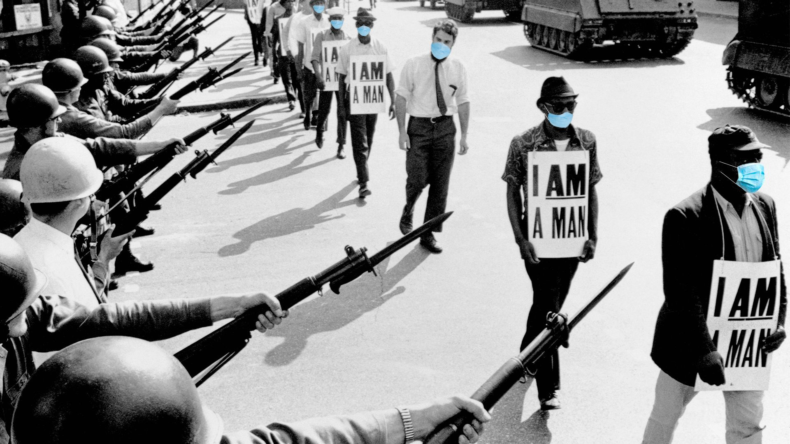
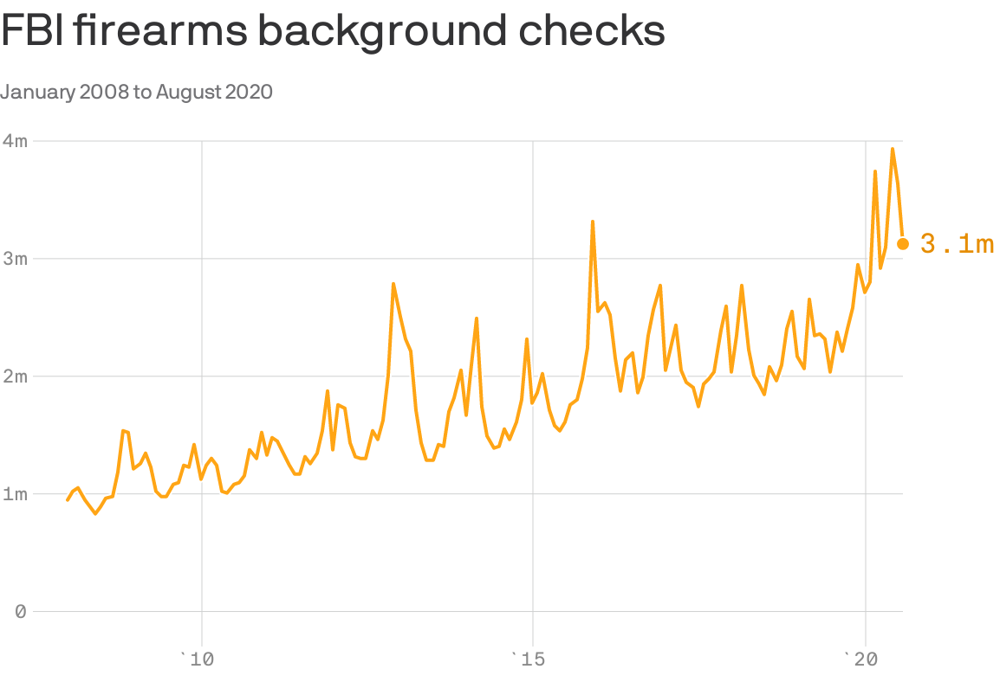
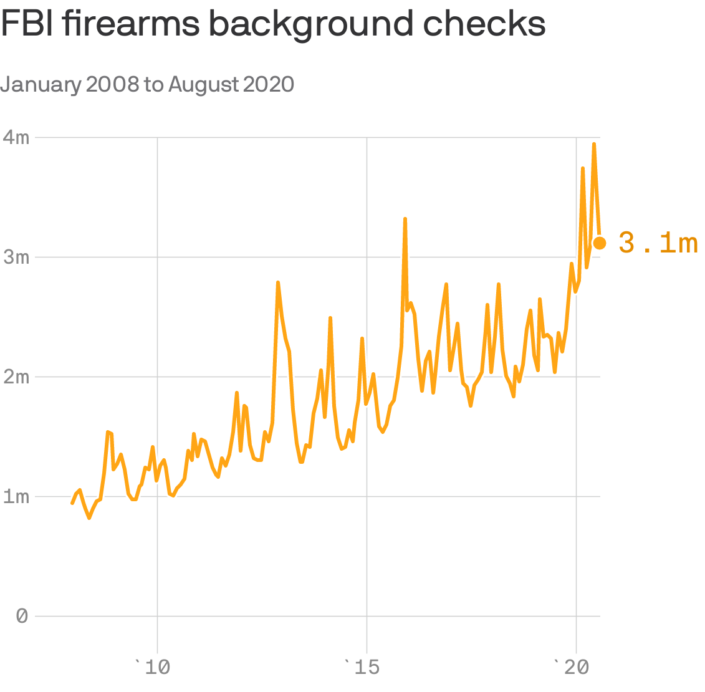

The biggest crisis since 1968
The biggest crisis since 1968

The year 1968 has been on a lot of people’s minds lately — another year of protests, violence and upheaval that seemed to be tearing the nation apart.
Yes, but: This crisis also has moments we’ve never seen before — and some historians and experts say the differences suggest that 2020 doesn't compare well at all.
'Yes, this year is worse than 1968.Plus it’s not even half over!'said Richard Haass, president of the Council on Foreign Relations and author of the new book, 'The World: A Brief Introduction.' The big picture: There are plenty of similarities.The demonstrations in the streets that we’re seeing now have a parallel in the mass demonstrations of 1968, as do the racism and police brutality we’re seeing now.We’ve seen cities burning in both years, and fearsome police crackdowns.
And both times, there was a 'law and order' Republican promising to end the violence. 'In 1968 there were black leaders and protesters and activists still trying to get white America to understand what was going on in black America,' Mark Anthony Neal, chair of the Department of African and African American Studies at Duke University, tells Axios' Margaret Talev. 'At this moment, now, it's not so much the challenge of getting white America to know what's going on in black America — it's getting them to care.' Thankfully, 2020 has not been a year of war and assassinations — two key differences that have led some historians to conclude that 1968 was a bigger year of upheaval.
As James Fallows wrote in The Atlantic of the Vietnam War and the ever-present fear of being drafted in 1968: 'It was different from now, and worse.' And yet, 2020 has still been able to shock us.Here’s what’s different this time:
We’re also in the middle of a pandemic, when everyone’s nerves are already frayed over the more than 100,000 Americans who have lost their lives — and over the skyrocketing unemployment that was set in motion by the lockdown.'Twice as many Americans died in the past 4 months of COVID-19 as did in the entire Vietnam War,' Haass notes. Everything is being captured in real time on social media as well as cable news.Yes, we all saw the murder of George Floyd at the hands of police with our own eyes, thanks to the video.But we also see it almost immediately when a protest turns violent — or when police break out the tear gas, rubber bullets or pepper balls to crack down on protesters. Treating protest violence as domestic terrorism — as Attorney General Bill Barr has promised to do — could be seen as a dangerous parallel with other countries.As Axios’ Bethany Allen-Ebrahimian notes, rising authoritarian leaders — from Russia's Vladimir Putin to Turkey's Recep Tayyip Erdoğan — have cracked down on their political opposition as a means to consolidate power in the early years of their rule, or to paralyze movements that seek to undermine the power they have already accrued. The targeting of journalists by police, and sometimes by protesters, has gone beyond the scale of anything journalists have experienced covering protests in recent years — with reporters and camera crews getting arrested, shot at with rubber bullets, being tear-gassed, and even punched by police officers. And this time, the president of the United States is inflaming the tensions rather than trying to calm them.
President Trump and Richard Nixon both stood up for 'law and order' to appeal to Americans tired of protest violence and upheaval, and other presidents have used the Insurrection Act of 1807 to deploy federal troops to cities in crisis. But there’s only one president who has made statements like 'when the looting starts, the shooting starts' — and who went to a church after law enforcement officers smoked out peaceful protesters and even priests. 'If your question is, 'Should you use tear gas to clear a path so the president can go have a photo op,' the answer is no,' Sen.Tim Scott of South Carolina, the only African-American Republican in the Senate, said Tuesday. 'For all his flaws, Lyndon Johnson was a president, not, as in Trump's case, a provocateur,' historian Jon Meacham said about the 1968 president.'He was wrong about the war, but he was committed to the proposition that national unity was a good thing.'
And for all of his 'law and order' talk, even Nixon met with Vietnam protesters at the Lincoln Memorial one night in 1970. What hasn’t changed: Read this quote from a March 1968 speech by Martin Luther King Jr. and think about the frustrations today’s protesters have taken to the streets:
'And I must say tonight that a riot is the language of the unheard.And what is it America has failed to hear?It has failed to hear that the plight of the Negro poor has worsened over the last twelve or fifteen years.It has failed to hear that the promises of freedom and justice have not been met.And it has failed to hear that large segments of white society are more concerned about tranquility and the status quo than about justice and humanity.'
The bottom line: Meacham notes that in the 1968 election, Nixon and segregationist George Wallace together got about 57 percent of the vote.
'So in this convulsive moment, let's not say, ‘This isn't who we are.’It is who many Americans are,' Meacham said.The right question, he said, is: 'Who do we want to be?'Posted On: 2020-06-03T00:00:00
Posted By: David Nather



Content Date: 2020-06-03
Download Date: 2021-05-15
Document ID: L0C04CC9U